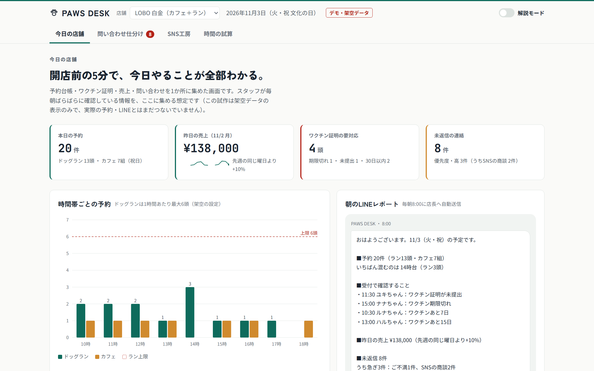
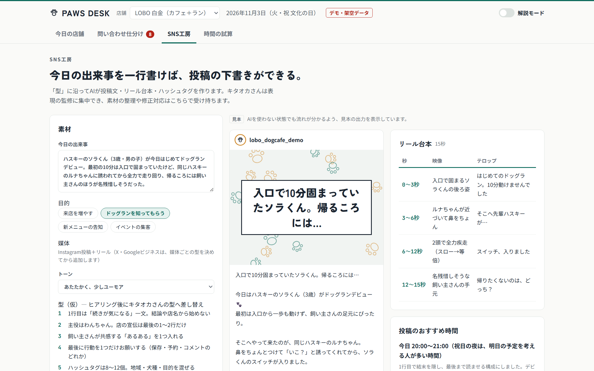

業務委託・協業のご提案
キタオカさんの「手」を空けて、
SNSの力を売上に変える。
AI・GASでペット事業の雑務を引き取り、キタオカ流SNSを「商品」にする4段階の計画
冨士 広樹 様 ／ キタオカ 様 ｜ 2026年11月
提案者 AI業務自動化コンサルタント 神田 渉
結論
まず30日間、雑務を私に引き取らせてください。
まず状況を知るところから
最初は現場の状況を把握することから始めます。成果をお出しできるまで、業務委託の費用はいただきません。
空いた時間がSNSへ
キタオカさんが本来の強みに戻れる時間をつくる。それが次の「SNSの商品化」の原資になります。
固定費を抑えて始める
Googleフォーム・スプレッドシート・GAS・LINE公式の無料枠を優先して組みます。AI利用料など有料になるものは、事前にお見積りして合意してから。
2 ／ 16
いま起きていること（会食で伺った内容）
売れる力はあるのに、時間がそこに回っていない。
強み
キタオカさんのSNS戦略
集客目的のマーケティング依頼が、外から多数届いている
ボトルネック
ペット事業の雑務
予約・問い合わせ・連絡・集計に追われ、依頼を受けきれない
結果
機会損失
受注につながるかもしれない相談に、手が回っていない状態
打ち手は「キタオカさんがもっと頑張る」ではなく、雑務のほうを仕組みに移すことです。
3 ／ 16 ｜ 雑務の内訳と件数は、初回ヒアリングで棚卸しします
事業の理解
3つの事業それぞれに、AIで役に立てる場所がある。
| 会社 | 事業 | 私が役に立てること |
|---|---|---|
| 株式会社ＤＤＩ | M&A支援（FA・仲介） | 買収後の業務の見える化と立て直し（ステップ③） |
| GRANDY | HUSKY CAFE TOKYO／DOG RUN TOKYO の運営 | 雑務の自動化（①）とSNSの商品化（②）の実証の場 |
| グランメイト | 医療機器商社（ペット関連も含む） | ペット×医療の新事業づくり（ステップ④） |
いちばん手前にあるGRANDYで型を作り、DDIの案件とグランメイトへ広げる順番を考えています。
4 ／ 16 ｜ 出典：国税庁 法人番号公表サイト、各社・各店舗の公式サイト（2026年11月確認）。会社間の関係は公開情報の範囲での理解です
全体像
信頼を先に積んで、4段階で広げる。
①
雑務の
引き取り
予約・問い合わせ・集計をAIとGASに移す
GRANDY｜最初の30日
②
SNSの型を
商品化
キタオカ流を手順に分解し、AIで量産、監修して納品
外部のお客さま｜2〜3か月目
③
M&A後の
立て直し
成約後の現場業務と集客を、必要に応じて支援
DDI｜案件ごと
④
ペット×医療
グランメイト佐藤社長との新事業づくり
グランメイト｜実績のあと
5 ／ 16 ｜ 前の段階の成果を見てから、次に進むかを判断していただく形です
ステップ① 雑務の引き取り
毎日くり返す手作業から、仕組みに移す。
| 雑務 | いま（想定） | 仕組みにした後 |
|---|---|---|
| ドッグランの予約 | DM・電話で受けて手で台帳に書く | フォーム→台帳に自動記入、満枠は自動で締切 |
| ワクチン証明の確認 | 来店のたびに紙を見て期限を確かめる | 登録時に期限を記録、切れる前に自動で連絡 |
| 問い合わせの返信 | 同じ質問に毎回手で答える | AIが下書き、スタッフは確認して送るだけ |
| 日報・売上の集計 | 閉店後にレジと手書きメモを突き合わせ | 毎朝、前日の数字と気づきがLINEに届く |
| 外部からのSNS依頼 | DMに埋もれて返事が遅れる | 依頼を一覧にし、AIが優先度と見積りの目安を付ける |
6 ／ 16 ｜ 「いま」の列は一般的な小規模店舗を想定した仮置きです。実際の流れはヒアリングで確認します
動くデモをご用意しました
「PAWS DESK」― 店舗の雑務とSNSを1画面で。

今日の店舗 予約・ワクチン期限・売上・要対応が朝いちばんに分かる

SNS工房 出来事を一行書くと、投稿文・台本・タグをAIが作る
7 ／ 16 ｜ 店舗名・数字はすべて架空。予約・DM・LINEとの接続は、いまの環境を確認してから作ります
ステップ② SNSの型を商品化
キタオカさんの頭の中を「手順」にして、AIで量産する。
1. 分解
型を言葉にする
フックの作り方、投稿の時間帯、写真の選び方を聞き取る
2. 仕込み
AIに覚えさせる
型と過去の当たり投稿を、AIの指示書にまとめる
3. 量産
下書きを作る
お客さまごとに、1か月分の投稿案と台本を一度に出す
4. 監修
キタオカさんが仕上げ
表現と方向性の監修に集中。素材整理と修正は神田が担当
ゼロから書かずに監修に集中できるので、同時に持てるお客さまが増えます。まず1社分で、監修にかかる時間と修正量を測ってから広げます。
8 ／ 16 ｜ キタオカさんのノウハウと指示書の利用範囲・権利・終了後の扱いは、商品化の前に合意します
ステップ③ M&A後の立て直し
成約後の現場業務と集客を、①②の型で支援する。
最初の30日
見える化
誰が何に何時間使っているかを棚卸しし、売上・原価・人件費を一枚にする
60日目まで
雑務の自動化
①で作った仕組みを業種に合わせて入れ替え、現場の手を空ける
100日目まで
集客の立て直し
②の型でSNSを作り直し、新しい体制での集客を支える
DDIさんにとっての価値：譲受企業に「成約後の現場支援」を紹介できることが、仲介・FAとしての上乗せの価値になります。
10 ／ 16 ｜ 店舗型事業など、型が合いやすい案件から。対象範囲と評価指標は買い手側のPMI責任者と合意します
ステップ④ ペット×医療（構想）
ペットと飼い主が集まる場所に、医療と介護の知見をつなぐ。
シニア期の見守り
飼い主の同意を得て来店時の記録をため、気になる変化は専門家への相談をすすめる
介護用品の提案
動物への適合性を獣医師等と確かめたうえで、介護用品を紹介する窓口にする
発信の土台
②のSNSの型で、専門的な情報を飼い主に分かる言葉で届ける
これはまだ構想です。①〜③の実績をご覧いただいたうえで、佐藤社長にお話しする機会をいただけたら嬉しいです。
11 ／ 16 ｜ 診断・治療の判断は行いません。表現と実施範囲は、薬機法・獣医療法を獣医師等と確認して決めます
体制
得意なことだけを持ち寄る、三者のチーム。
冨士さん
接点と進め方
DDI・GRANDY・グランメイトとの接点づくりと、進め方のご相談
キタオカさん
SNSの型と監修
勝ちパターンを教え、合意した範囲で表現を監修する。最終承認者は事前に決める
神田
AIと仕組み
雑務の自動化、AIの指示書づくり、素材整理と修正対応、運用と保守
形は業務委託。私は外から入るので、固定の人件費を増やさずに始められます。
12 ／ 16
30日の試験運用
1週ごとに、目に見える成果をお渡しします。
| 週 | やること | お渡しするもの |
|---|---|---|
| 1週目 | キタオカさん・スタッフさんに60分ヒアリング | 雑務の棚卸し表（担当・件数・時間）と成功の基準 |
| 2週目 | 効果の大きい2〜3個を試作 | 実際に触れる予約・問い合わせの仕組み |
| 3週目 | 店舗で実際に使ってもらい、直す | 直した版と、使い方の1枚マニュアル |
| 4週目 | 効果を測って振り返る | 基準と比べた結果（正味の削減時間・ミス・現場の負担）と次の提案 |
システム費
無料枠を優先。AI利用料など有料分は事前に見積り・合意
データの扱い
店舗のアカウントで管理。AIに渡すのは必要な範囲だけ
試験運用の費用
無料。成果をお出しできてから、改めてご相談します
13 ／ 16 ｜ LINE公式の無料プランは月200通（送る人数×回数）まで。超える場合は事前にご相談します
提案者のプロフィール
店舗運営の現場17年と、AIの仕組みづくり。
神田 渉
AI業務自動化コンサルタント
経歴 コンビニFC 17年（2009年〜）
店長 2009〜2012年
エリアマネジャー 2012〜2023年
統括マネジャー 2023年〜現在
20店舗を統括
現場で回る仕組みをつくる
マニュアル整備、業務の標準化、新店の立ち上げ支援
数字で判断する
売上・利益・人件費の分析と改善、KPI・予算の管理
人を育てる
店長・スタッフの教育の仕組みづくり、外国人店長の育成
AIで自分の手でつくる
ChatGPT・Claude・Claude Code・Codex・GASを使い、利益管理・接客評価・清掃と衛生管理などの業務アプリを自作し、現場で運用中
14 ／ 16 ｜ 2026年11月時点
これまでに作ったもの
肩書きより、動くものでお見せします。
店舗運営コンソール
飲食・店舗の本部業務をまとめた管理画面の試作。業務委託の提案用に制作
人件費の異常検知
勤怠と人件費のデータから、いつもと違う動きをAIで見つける分析画面の試作
研修教材の自動生成
複数の資料から、出典つきのスライド教材（100枚超）をプログラムで組み上げる仕組み
15 ／ 16 ｜ 上の2つは、その場で触れるサンプルを用意しています（架空データ）
お願い
今日決めていただきたいのは、この3つです。
1
キタオカさんとの60分ヒアリングの日程
雑務の流れとSNSの型を伺います。オンラインでも構いません
2
最初に手をつける雑務を2〜3個
「これが一番しんどい」というものから選んでください
3
試験運用を始める日
費用はいただきません。1週目に決めた基準で、30日後に続けるかをご判断ください
16 ／ 16 ｜ 止まっても手作業に戻せる形で組みます。やめる場合も、データ・設定・手順書をお引き渡しします